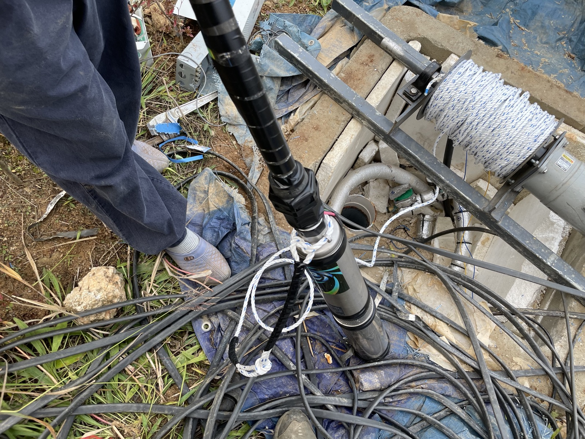
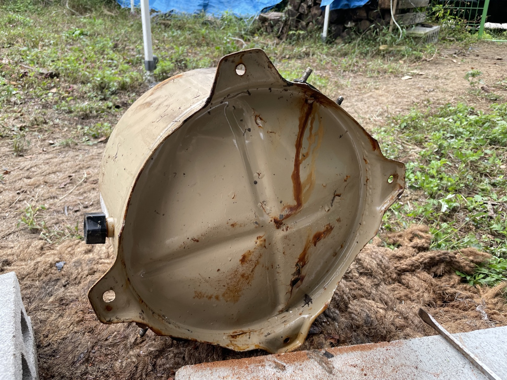

수중 80m 심정펌프 인양·교체
절연저항 0.5㏁ 미만 확인 후 당일 인양. 신품 교체 후 토출량 정상 확인, 성수기 전 복구 완료.
증상만 정확히 말씀해 주시면 전화로 원인을 절반 이상 좁힐 수 있습니다. 헛출장 없이, 필요한 부품을 챙겨서 갑니다.
모터 소손, 수위 저하, 압력스위치·배관 문제까지 원인이 다양합니다. 현장 진단이 가장 빠릅니다.
웅- 소리만 나고 물이 약하거나, 모터가 수시로 켜졌다 꺼진다면 교체 전에 점검이 필요합니다.
누전·절연 저하 신호일 수 있습니다. 절연저항 측정으로 모터 수명을 미리 판단해 드립니다.
홍천 겨울은 수도권과 다릅니다. 배관·압력탱크 동파 수리와 월동 보온 시공을 함께 합니다.
단순 교체 영업이 아니라, 살릴 수 있는 모터는 살리고 바꿔야 할 모터만 바꿉니다. 견적은 작업 전에 먼저 말씀드립니다.
심정·천정 수중펌프, 가압펌프, 인버터, 압력탱크, 제어반까지 계통 전체를 봅니다.
수중 80m 이상 산간 심정도 인양 장비를 갖추고 당일 교체합니다.
성수기에 물이 끊기면 영업 손실로 직결됩니다. 시즌 전 점검으로 미리 막습니다.
복잡한 절차 없이 세 단계로 끝납니다. 작업 도중 갑자기 금액이 바뀌는 일은 없습니다.
증상을 말씀해 주시면 무료로 원인을 먼저 좁혀드립니다. 헛출장을 줄이기 위한 과정입니다.
현장에서 정확히 진단한 뒤 예상 금액을 먼저 말씀드립니다. 동의하셔야 작업을 시작합니다.
작업 완료 후 토출량과 압력을 확인해 정상 작동을 직접 보여드리고 마무리합니다.
홍천은 전국에서 가장 넓은 군입니다. 되지도 않는 "즉시 도착" 대신, 권역별 실제 소요를 미리 알려드립니다.
※ 양평·가평·춘천 등 인근 지역도 출장 가능합니다. 애매하면 일단 전화 주세요.
사진과 측정값이 남는 작업만 사례로 올립니다.

절연저항 0.5㏁ 미만 확인 후 당일 인양. 신품 교체 후 토출량 정상 확인, 성수기 전 복구 완료.

보온 미비로 압력탱크 배관 동파. 파손부 교체와 함께 월동 보온 시공까지 마무리.
현장에서 갑자기 금액이 커지는 일이 없도록, 접수 단계에서 예상 범위를 안내합니다.
무료. 증상을 들어보고 출장이 필요한지, 자가 조치가 가능한지 먼저 판단해 드립니다.
권역별로 정해진 출장비를 접수 시 안내합니다. 수리 진행 시 출장비는 수리비에 포함됩니다.
현장 진단 후 작업 전에 견적을 먼저 확정합니다. 동의 없이 진행하는 작업은 없습니다.
※ 심정 인양·교체는 관정 깊이와 펌프 용량에 따라 달라 전화 상담 시 예상 범위를 안내드립니다.